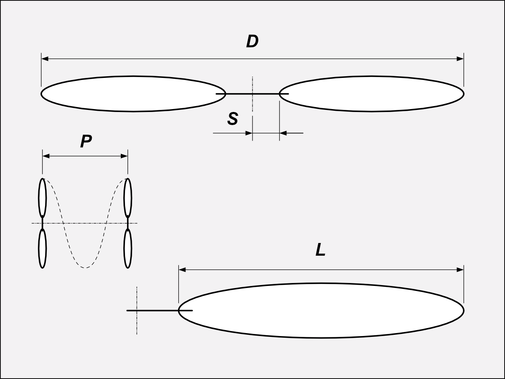

r = {{ transitionInfo.radius }} {{ t(form.unit) }}, {{ transitionInfo.percent }}%, {{ transitionInfo.angle }}°
| L, % | L, {{ t(form.unit) }} | {{ t('Pitch') }}, {{ t(form.unit) }} | {{ t('Angle') }}, ° |
|---|---|---|---|
| {{ row.step }} | {{ row.x }} | {{ row.pitch }} | {{ row.angle }} |
{{ t('Pitch') }}, {{ t(form.unit) }}